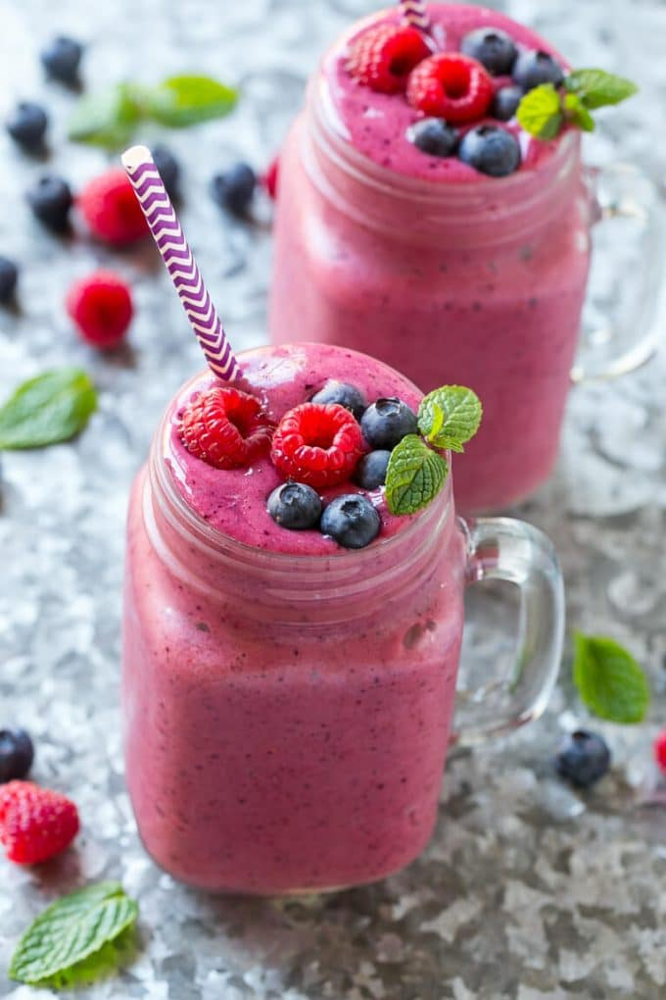

Mixed Berry Smoothie!

Picture of mixed berry smoothie
Ingrediants
- 1 1/2 cups apple juice
- 1.5 cups frozen mixed berries
- 3/4 cup vanilla Greek Yogurt
- 1 tablespoon honey
Steps:
- Place the apple juice, banana, berries and yogurt in a blender; blend until smooth. If the smoothie seems too thick, add a little more liquid (1/4 cup).
- Taste and add honey if desired. Pour into two glasses and garnish with fresh berries and mint sprigs if desired.